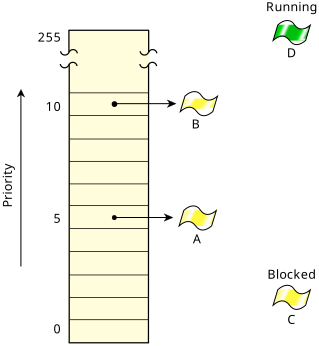

In the FIFO scheduling policy, a thread is allowed to consume CPU for as long as it wants. This means that if that thread is doing a very long mathematical calculation, and no other thread of a higher priority is ready, that thread could potentially run forever. What about threads of the same priority? They're locked out as well. (It should be obvious that threads of a lower priority are locked out too.)
If the running thread quits or voluntarily gives up the CPU, then
the kernel looks for other threads at the same priority that are capable of
using the CPU.
If there are no such threads, then the kernel looks for lower-priority
threads capable of using the CPU.
Note that the term voluntarily gives up the CPU
can mean one of
two things.
If the thread goes to sleep, or blocks on a semaphore, etc., then yes, a lower-priority thread could run (as described above).
But there's also a special
call,
sched_yield()
(based on the kernel call
SchedYield()),
which gives up CPU only to another thread of the same priority—a
lower-priority thread would never be given a chance to run if a higher-priority was ready to run.
If a thread does in fact call sched_yield(), and no other thread at
the same priority is ready to run, the original thread continues running.
Effectively, sched_yield() is used to give another thread of the same priority a crack at the CPU.
In the diagram below, we see three threads operating in two different processes:
If we assume that threads A
and B
are READY, and that
thread C
is blocked (perhaps waiting for a mutex), and that thread
D
(not shown) is currently executing, then this is what a portion
of the READY queue that the microkernel maintains will look like:

This shows the kernel's internal READY queue, which the kernel uses to decide
what to schedule next. Note that thread C
is not on the READY
queue, because it's blocked, and thread D
isn't on the READY
queue either because it's running.